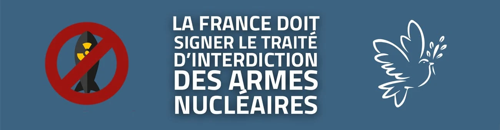

Lettre ouverte relayée
Désarmement nucléaire. Une lettre ouverte demande à la France de signer le traité
Date de mise à jour indiquée par Facebook · 23 janvier 2026
Repères éditoriaux
Dans leur lettre du 19 janvier 2026, le Mouvement de la paix et Initiatives pour le Désarmement Nucléaire demandent au président de la République que la France signe le traité sur l’interdiction des armes nucléaires. La lettre s’appuie sur le cinquième anniversaire de son entrée en vigueur.
Texte de la publication · Mouvement de la paix et Initiatives pour le Désarmement Nucléaire
LETTRE OUVERTE : REQUÊTE AU PRÉSIDENT DE LA RÉPUBLIQUE À L’OCCASION DU CINQUIÈME ANNIVERSAIRE DE L’ENTRÉE EN VIGUEUR DU TRAITÉ SUR L’INTERDICTION DES ARMES NUCLÉAIRES (TIAN)
Monsieur le Président,
Les Nations unies, créées il y a 80 ans, ont affirmé le désarmement nucléaire comme une priorité absolue dans leur toute première résolution, A/Res/1(1). En 2013, frustrée par l’absence de progrès, l’Assemblée générale des Nations Unies a déclaré le 26 septembre Journée internationale pour l’élimination totale des armes nucléaires (A/Res/68/32). Cette Journée internationale vise à sensibiliser et à informer le public sur la menace que représentent les armes nucléaires pour l’humanité et sur la nécessité de leur élimination totale. Chaque année, le 26 septembre, l’ONU organise également une réunion de haut niveau des dirigeants mondiaux afin de discuter des « mesures urgentes et efficaces » à prendre pour parvenir au désarmement nucléaire mondial.
Le choix de cette date n’est pas arbitraire : l’une des nombreuses occasions où l’humanité a frôlé la guerre nucléaire s’est produite le 26 septembre 1983, au plus fort de la guerre froide. Une guerre nucléaire a été évitée de justesse lorsque le colonel Stanislav Petrov, officier de service dans une installation soviétique d’alerte nucléaire précoce, a enfreint le protocole en ne confirmant pas à ses supérieurs une attaque apparente de missiles balistiques en provenance des États-Unis (qui s’est révélée être une fausse alerte). Deux ans plus tard, les États-Unis et l’Union soviétique ont déclaré conjointement qu’« une guerre nucléaire ne peut être gagnée et ne doit jamais être menée ». Cet engagement a été réaffirmé au cours des années suivantes, notamment dans une déclaration des États du P5 en 2022 et dans le Pacte pour l’avenir adopté à l’unanimité lors du Sommet des Nations unies pour l’avenir (septembre 2024).
Cependant, aujourd’hui, le risque d’une guerre nucléaire due à un accident, à une erreur de calcul, à une escalade de crise ou à une intention malveillante est plus élevé que jamais, l’Horloge de l’Apocalypse se rapprochant davantage de minuit qu’en 1983. L’utilisation d’armes nucléaires par l’un des neuf États possesseurs de l’arme nucléaire ou par leurs alliés nucléaires aurait des conséquences catastrophiques sur le plan humain, économique et environnemental. L’utilisation d’une petite fraction seulement des quelque 12 240 armes nucléaires stockées dans le monde pourrait mettre fin à la vie telle que nous la connaissons. En outre, les 100 milliards de dollars américains dépensés chaque année pour les armes nucléaires seraient plus utiles pour soutenir la paix, la protection de l’environnement et d’autres besoins urgents de l’humanité et de la planète, comme l’expriment les Objectifs de développement durable (ODD). Ces montants vont encore augmenter comme le montrent en France les programmes de modernisation en cours sur les armes nucléaires.
La plus haute juridiction mondiale, la Cour internationale de justice, a affirmé en 1996 que « la menace ou l’emploi d’armes nucléaires serait généralement contraire aux règles du droit international applicable dans les conflits armés, et spécialement aux principes et règles du droit humanitaire » et qu’il existe une obligation universelle pour les États parties au Traité de non-prolifération (TNP) de négocier de bonne foi afin de parvenir à un désarmement nucléaire complet. Les États qui s’appuient actuellement sur les armes nucléaires pour assurer leur sécurité ont l’obligation de remplacer ces politiques par des approches fondées sur le droit international et la sécurité commune, comme le prévoit la Charte des Nations unies.
Le Pacte de l’ONU pour l’avenir comprend des engagements visant à prévenir la guerre nucléaire et à parvenir à l’élimination totale des armes nucléaires.
Le moment est venu pour tous les États membres de l’ONU, au vu d’une situation internationale d’une gravité extrême et au vu des défis que va devoir affronter l’humanité entière, pour annoncer des propositions et plans concrets visant à atteindre ces objectifs.
Cette urgence est d’autant plus grande que la XIe Conférence d’examen (REVCON) du TNP se tiendra à New York du 27 avril au 22 mai 2026 et que cette même année en septembre sera l’occasion de la première Conférence d’examen de l’état d’avancement de la mise en œuvre du Traité sur l’interdiction des armes nucléaires (TIAN) entré en vigueur le 22 janvier 2021 et qui, à la date du 19 janvier 2026, a été signé par 99 États dont 74 l’ont ratifié (y compris six États européens).
L’urgence est d’autant plus forte que le panorama nucléaire s’est assombri en 2025, des frappes américaines et israéliennes sur les sites nucléaires civils iraniens au tir d’essai du missile à propulsion nucléaire russe Bourevestnik en passant par les déclarations de Donald Trump sur l’éventuelle reprise d’essais nucléaires.
C’est pourquoi, en tant que Mouvement de la paix et Initiatives citoyennes pour le Désarmement Nucléaire, nous nous adressons solennellement à vous pour vous demander :
De réaffirmer, comme vous l’avez fait au G20 en 2022 et 2023, que la menace ou l’utilisation d’armes nucléaires est « inadmissible » ;
De promouvoir des mesures concrètes de la part de la France et d’obtenir des États dotés d’armes nucléaires et de leurs alliés pour réduire de toute urgence le risque nucléaire, notamment en désactivant une partie de leurs forces nucléaires et en adoptant des politiques visant à ne jamais déclencher une guerre nucléaire ;
De s’engager à agir collectivement pour parvenir à l’élimination mondiale des armes nucléaires dans les délais les plus brefs et au plus tard à l’occasion du centenaire de l’ONU en 2045 comme demandé dans un Appel conjoint de milliers de personnalités et d’organisations de la société civile, et à prendre immédiatement des mesures, notamment par le biais de négociations multilatérales, pour mettre en œuvre cet engagement ;
De geler, réduire les budgets consacrés aux armes nucléaires et mettre fin aux investissements publics et privés dans l’industrie des armes nucléaires, en particulier en stoppant tous les programmes de modernisation de ces armes qui sont illégales, dangereuses, coûteuses et moralement inadmissibles ;
De réorienter ces fonds vers le renforcement des Nations unies, la promotion du maintien de la paix et la résolution des conflits dans le respect de la Charte des Nations unies et en mettant en œuvre la résolution 53/243 de l’Assemblée générale des Nations unies sur la culture de la paix, vers l’accélération des mesures de protection du climat et la satisfaction des besoins humains et économiques, conformément à l’article 26 de la Charte des Nations unies qui stipule que les États membres doivent « favoriser l’établissement et le maintien de la paix et de la sécurité internationales en ne détournant vers les armements que le minimum des ressources humaines et économiques du monde. »
Face à l’aggravation de la situation internationale, alors qu’avaient lieu il y a 80 ans les bombardements atomiques d’Hiroshima et de Nagasaki et la création des Nations unies, le moment est venu de prendre une décision claire en affirmant que la France entend respecter et défendre le Traité de non-prolifération nucléaire (TNP) dont l’article VI oblige les États parties à négocier « de bonne foi » en faveur du désarmement nucléaire, et donner un gage de sa bonne foi en signant dès maintenant le Traité sur l’interdiction des armes nucléaires (TIAN).
Cet acte est nécessaire pour que la France garde un peu de crédibilité sur le plan international en respectant nos engagements, comme l’affirmait le ministre de l’Europe et des Affaires étrangères le 27 juillet 2025 en réponse au Sénateur Guy Bennaroche : « La France est engagée avec détermination en faveur de la poursuite du désarmement nucléaire. »
Vous trouverez ci-joint la liste de 600 organisations de différents pays qui formulent les mêmes exigences et soulignent combien nous approchons de l’heure de l’Apocalypse prévue par l’Association internationale de scientifiques Bulletin of the Atomic Scientists.
En France, les principales organisations militant pour la paix (Initiatives pour le désarmement nucléaire, Pax Christi, Pugwash, Action des citoyens pour le désarmement nucléaire, Enseignants pour la paix, Ican, Association des médecins pour la prévention de la guerre nucléaire (IPPNW), Mouvement de la Paix…) formulent les mêmes exigences.
Recevez, Monsieur le Président, l’expression de nos sentiments respectueux.
Roland NIVET Porte-parole national du Mouvement de la paix
et Bernard NORLAIN Général d’armée aérienne (2S) – Président de l’association Initiatives pour le Désarmement Nucléaire
Le 19 janvier 2026

Sources
Mouvement de la paix et Initiatives pour le Désarmement Nucléaire · publication relayée par le PCF 79 · bibliothèque Facebook · AR-0002-FB-00895
À lire aussi · Le PCF dénonce le rôle de l’OTAN